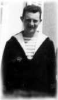
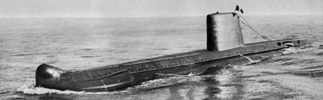
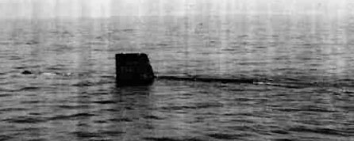
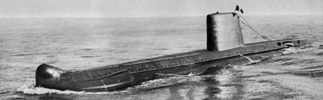
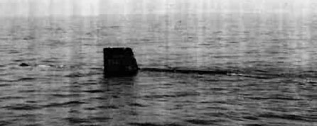

|
 |
|

Quelques
liens ...
Le
site officiel de la Marine
Nationale.
Le site
non officiel
de la Marine Nationale ( mais très documenté ).
Sousmarin.net
: Le portail français du sous-marin
Editions
photographiques Marius Bar
Le site
de l'association générale amicale des anciens des
sous-marins (AGAASM)
La section
"Minerve" de Brest
La section
"Casabianca" des Bouches du Rhône
La section
"Doris" des Flandres-Artois
Le site
du sous-marin
JUNON (type Daphnée)
Le site
de J.P. Petit
( Argonaute - Amazone )
Le site
de D.
Lepetit ( Narval - Agosta -Daphné )
L'histoire
tragique du sous-marin
Monge (1915)
Un
roman 'Operation
Madelone', et des informations sur les 'Narval'
Les
vaisseaux noirs : une introduction au monde des sous-marins
Un autre site (en anglais) sur la French
Navy
Un site
israélien
(en anglais) détaillant les circonstances de la perte du
sous-marin Dakar.
Un site
américain (en anglais) relatant la disparition de l'USS
Scorpion en 1968.
Une page
de liens concernant les accidents sur les sous-marins ( en anglais
)
Un site
( en anglais ) répertoriant les accidents survenus sur les
sous-marins en temps de paix.
Une base
de données
trés complète concernant les sous-marins à
travers le monde ( en anglais ).
Un site
de sous-mariniers (SubmarineSailor)
en anglais.
Une collection
de brevets internationaux de sous-mariniers.

Ce
site a été remarqué par
http://www.VivaBrest.com

Quelques
liens ...
Le
site officiel de la Marine
Nationale.
Le site
non officiel
de la Marine Nationale ( mais très documenté ).
Sousmarin.net
: Le portail français du sous-marin
Editions
photographiques Marius Bar
Le site de l'association générale amicale des anciens des sous-marins (AGAASM)
La section "Minerve" de Brest
La section "Casabianca" des Bouches du Rhône
La section "Doris" des Flandres-Artois
Le site du sous-marin JUNON (type Daphnée)
Le site de J.P. Petit ( Argonaute - Amazone )
Le site de D. Lepetit ( Narval - Agosta -Daphné )
L'histoire tragique du sous-marin Monge (1915)
Un roman 'Operation Madelone', et des informations sur les 'Narval'
Les
vaisseaux noirs : une introduction au monde des sous-marins
Un autre site (en anglais) sur la French
Navy
Un site
israélien
(en anglais) détaillant les circonstances de la perte du
sous-marin Dakar.
Un site
américain (en anglais) relatant la disparition de l'USS
Scorpion en 1968.
Une page
de liens concernant les accidents sur les sous-marins ( en anglais
)
Un site
( en anglais ) répertoriant les accidents survenus sur les
sous-marins en temps de paix.
Une base
de données
trés complète concernant les sous-marins à
travers le monde ( en anglais ).
Un site de sous-mariniers (SubmarineSailor) en anglais.
Une collection
de brevets internationaux de sous-mariniers.

|
|

|